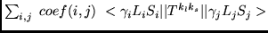
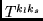
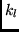
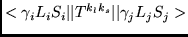
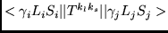

Gediminas Gaigalas
Institute of Theoretical Physics and Astronomy,
A. Goštauto 12, Vilnius 2600, LITHUANIA
Charlotte Froese Fischer
Department of Computer Science, Box 1679 B,
Vanderbilt University, Nashville, TN 37235, USA
Theoretical determination of atomic energy levels, orbitals and radiative transition data requires the calculation of matrix elements of physical operators ( see the multiconfiguration Hartree-Fock method [1], for example). The matrix elements of arbitrary operator can generally be expressed as

where  is a tensor operator of ranks ,  .
The program calculates the spin-angular part for
matrix elements
 of
one- and/or two-particle operator .
.
The program calculates the spin-angular part for
matrix elements
 of
one- and/or two-particle operator .
Method of solution
This program is created involving the
angular methodology of [2-5]. It
has been extended to include partially filled f - subshells
in wavefunction expansions.
The classification of terms is identical to that described in [5].
Restrictions on the complexity of the problem
The restrictions are similar to those described in [6] except that
non-orthogonal orbitals are not supported.
The initial and final state must constitute one orthonormal set for
MLTPOL, LSTR and LSJTR.
Unusual features of the program
Some of the subroutines described in the libraries may be used separately,
as electronic tables of standard quantities.
References
C. Froese Fischer, T. Brage and P. Jönsson, Computational Atomic Structure. An MCHF Approach (Institute of Physics Publishing, Bristol/Philadelphia, 1997).
G. Gaigalas and Z. Rudzikas, J. Phys. B: At. Mol. Phys. 29 (1996) 3303.
G. Gaigalas, Z. Rudzikas and C. Froese Fischer, J. Phys. B: At. Mol. Phys. 30 (1997) 3747.
G. Gaigalas, A. Bernotas, Z. Rudzikas and C. Froese Fischer, Physica Scripta 57 (1998) 207.
G. Gaigalas, Z. Rudzikas and C. Froese Fischer, Atomic Data and Nuclear Data Tables 70 (1998) 1.
C. Froese Fischer and B. Liu, Comput. Phys. Commun. 64 (1991) 406.